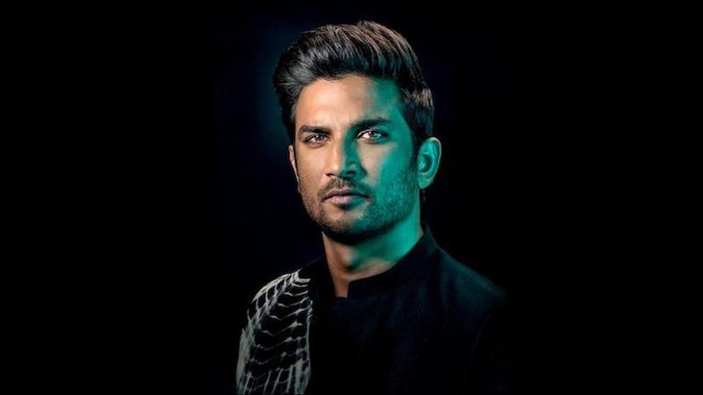

Sushant Singh Rajput

- Born : 21 January 1986; Patna, Bihar, India
- Died : 14 June 2020 (aged 34); Mumbai, Mahaarashtra, India
- Occupation : Actor, Model, Dancer, Film Actor
- Films - Popular movies of Sushant Singh Rajput
- Known for : Sushant Singh Rajput (21 January 1986 – 14 June 2020) was an Indian actor known for his work in Hindi cinema. He starred in a number of commercially successful Hindi films such as M.S. Dhoni: The Untold Story (2016), Kedarnath (2018) and Chhichhore (2019).